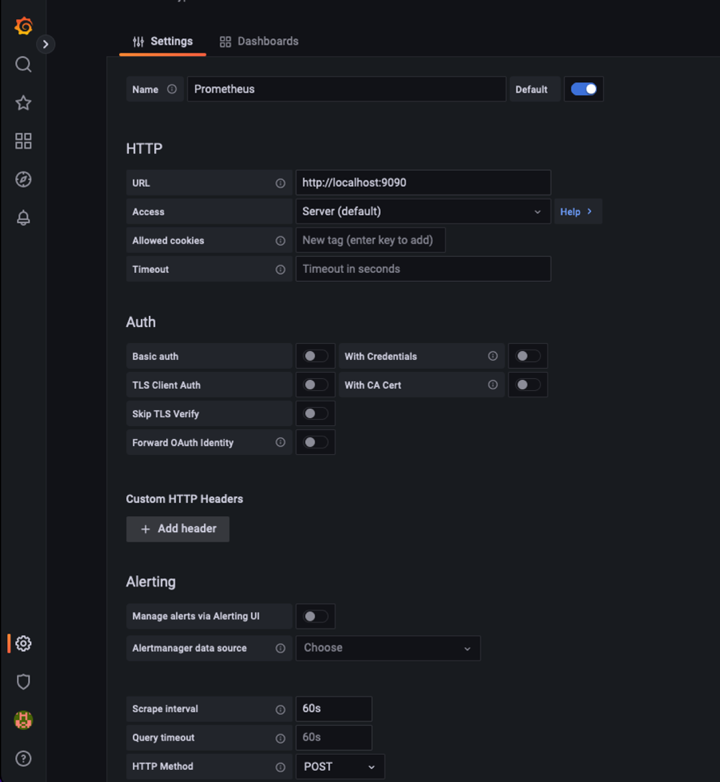

已驗證的協力廠商解決方案
已驗證的協力廠商解決方案
使用Prometheus和Grafana來延長指標保留時間
 建議變更
建議變更
本技術報告提供使用StorageGRID 外部Prometheus和Grafana服務設定NetApp供應鏈11.6的詳細說明。
簡介
支援使用Prometheus儲存指標、並透過內建的Grafana儀表板提供這些指標的視覺效果。StorageGRID透過StorageGRID 設定用戶端存取憑證、並為指定的用戶端啟用Prometheus存取、可從功能表安全存取Prometheus指標。目前、保留此度量資料的能力受管理節點的儲存容量限制。為了獲得更長的持續時間、以及建立自訂的這些指標視覺效果、我們將部署新的Prometheus和Grafana伺服器、設定新伺服器、從StorageGRID執行個體中掃描指標、並建立一個儀表板、其中包含對我們來說非常重要的指標。您可以取得更多有關在中收集的Prometheus指標的資訊 "本文檔StorageGRID"。
聯盟Prometheus
實驗室詳細資料
就本例而言、我將使用所有虛擬機器來StorageGRID 執行VMware 11.6節點、以及使用一個DEBIAN11伺服器。此解決方法介面設定了公開信任的CA憑證。StorageGRID此範例將不會安裝及設定StorageGRID 整個作業系統或是安裝的Debian Linux。您可以使用Prometheus和Grafana所支援的任何Linux風格。Prometheus和Grafana都可以安裝成Docker容器、從來源或預先編譯的二進位檔建置。在此範例中、我會將Prometheus和Grafana二進位檔案直接安裝在同一部的Debian伺服器上。請從下載並遵循基本安裝指示 https://prometheus.io 和 https://grafana.com/grafana/ 分別。
設定StorageGRID 驗證以供Prometheus用戶端存取
若要存取StorageGRID儲存的Prometheus指標、您必須使用私密金鑰產生或上傳用戶端憑證、並啟用用戶端的權限。這個介面必須具有SSL憑證。StorageGRID此憑證必須由Prometheus伺服器信任、或是由信任的CA信任、如果是自行簽署、則必須手動信任。若要瞭解更多資訊、請造訪 "本文檔StorageGRID"。
-
在「功能區管理」介面中、選取左下角的「組態」、然後在「安全性」下的第二欄中、按一下「憑證」StorageGRID 。
-
在「憑證」頁面上、選取「用戶端」索引標籤、然後按一下「新增」按鈕。
-
提供將被授予存取權並使用此憑證的用戶端名稱。按一下「權限」下方的方塊、位於「允許Prometheus」前面、然後按一下「繼續」按鈕。

-
如果您有CA簽署的憑證、您可以選取「上傳憑證」的選項按鈕、但在我們的案例中StorageGRID 、我們要選擇「產生憑證」的選項按鈕、讓流程無法產生用戶端憑證。必填欄位將會顯示以供填寫。輸入用戶端伺服器的FQDN、伺服器的IP、主旨及有效天數。然後按一下「產生」按鈕。


|
Be mindful of the certificate days valid entry as you will need to renew this certificate in both StorageGRID and the Prometheus server before it expires to maintain uninterrupted collection. |
-
下載憑證pem檔案和私密金鑰pem檔案。

|
|
This is the only time you can download the private key, so make sure you do not skip this step. |
準備Linux伺服器以進行Prometheus安裝
在安裝Prometheus之前、我想要讓Prometheus使用者、目錄結構做好準備、並設定度量儲存位置的容量。
-
建立Prometheus使用者。
sudo useradd -M -r -s /bin/false Prometheus -
建立Prometheus、用戶端憑證和指標資料的目錄。
sudo mkdir /etc/Prometheus /etc/Prometheus/cert /var/lib/Prometheus -
我使用ext4檔案系統來格式化我所使用的磁碟以保留指標。
mkfs -t ext4 /dev/sdb
-
然後、我將檔案系統掛載到Prometheus度量目錄。
sudo mount -t auto /dev/sdb /var/lib/prometheus/
-
取得您用於度量資料的磁碟uuid。
sudo ls -al /dev/disk/by-uuid/ lrwxrwxrwx 1 root root 9 Aug 18 17:02 9af2c5a3-bfc2-4ec1-85d9-ebab850bb4a1 -> ../../sdb
-
在/etc/fstb/中新增項目、使掛載會在重新開機後持續使用/dev/sdb的uuid。
/etc/fstab UUID=9af2c5a3-bfc2-4ec1-85d9-ebab850bb4a1 /var/lib/prometheus ext4 defaults 0 0
安裝及設定Prometheus
現在伺服器已經準備好、我可以開始安裝Prometheus並設定服務。
-
擷取Prometheus安裝套件
tar xzf prometheus-2.38.0.linux-amd64.tar.gz -
將二進位檔複製到/usr/local/bin、並將擁有權變更為先前建立的Prometheus使用者
sudo cp prometheus-2.38.0.linux-amd64/{prometheus,promtool} /usr/local/bin sudo chown prometheus:prometheus /usr/local/bin/{prometheus,promtool} -
將主控台和程式庫複製到/etc/Prometheus
sudo cp -r prometheus-2.38.0.linux-amd64/{consoles,console_libraries} /etc/prometheus/ -
將先前從StorageGRID 下列網址下載的用戶端憑證和私密金鑰pem檔案複製到/etc/Prometheus/certs
-
建立Prometheus組態yaml檔案
sudo nano /etc/prometheus/prometheus.yml -
插入下列組態。工作名稱可以是您想要的任何內容。將「-targets：[']"（目標：[']"）變更為管理節點的FQDN、如果您變更了憑證名稱和私密金鑰檔名、請更新TLS_config區段以進行比對。然後儲存檔案。如果您的網格管理介面使用自我簽署的憑證、請下載該憑證並將其與具有唯一名稱的用戶端憑證一起放置、然後在TLS_config區段中新增ca_file:/etc/Prometheus/cert /UCERT.pem
-
在此範例中、我會收集所有以alertmanager、Cassandra、節點和StorageGRID VMware為開頭的指標。如需有關Prometheus指標的詳細資訊、請參閱 "本文檔StorageGRID"。
# my global config global: scrape_interval: 60s # Set the scrape interval to every 15 seconds. Default is every 1 minute. scrape_configs: - job_name: 'StorageGRID' honor_labels: true scheme: https metrics_path: /federate scrape_interval: 60s scrape_timeout: 30s tls_config: cert_file: /etc/prometheus/cert/certificate.pem key_file: /etc/prometheus/cert/private_key.pem params: match[]: - '{__name__=~"alertmanager_.*|cassandra_.*|node_.*|storagegrid_.*"}' static_configs: - targets: ['sgdemo-rtp.netapp.com:9091']
-
|
|
如果您的網格管理介面使用自我簽署的憑證、請下載該憑證、並以唯一名稱將其與用戶端憑證一起放置。在「TLs_config」區段中、將憑證新增到用戶端憑證和私密金鑰行上方 ca_file: /etc/prometheus/cert/UIcert.pem |
-
將/etc/Prometheus中所有檔案和目錄的擁有權、以及/var/lib/Prometheus變更為Prometheus使用者
sudo chown -R prometheus:prometheus /etc/prometheus/ sudo chown -R prometheus:prometheus /var/lib/prometheus/ -
在/etc/systemd/system中建立Prometheus服務檔案
sudo nano /etc/systemd/system/prometheus.service -
請插入下列行、並記下#--storage．tsdb.retitation.times=1y#、將度量資料的保留時間設為1年。或者、您也可以使用#-storage、tsdb、retrite.size=300GiB#來根據儲存限制來保留基礎資料。這是唯一可設定保留指標的位置。
[Unit] Description=Prometheus Time Series Collection and Processing Server Wants=network-online.target After=network-online.target [Service] User=prometheus Group=prometheus Type=simple ExecStart=/usr/local/bin/prometheus \ --config.file /etc/prometheus/prometheus.yml \ --storage.tsdb.path /var/lib/prometheus/ \ --storage.tsdb.retention.time=1y \ --web.console.templates=/etc/prometheus/consoles \ --web.console.libraries=/etc/prometheus/console_libraries [Install] WantedBy=multi-user.target -
重新載入systemd服務以註冊新的Prometheus服務。然後啟動並啟用Prometheus服務。
sudo systemctl daemon-reload sudo systemctl start prometheus sudo systemctl enable prometheus -
檢查服務是否正常運作
sudo systemctl status prometheus● prometheus.service - Prometheus Time Series Collection and Processing Server Loaded: loaded (/etc/systemd/system/prometheus.service; enabled; vendor preset: enabled) Active: active (running) since Mon 2022-08-22 15:14:24 EDT; 2s ago Main PID: 6498 (prometheus) Tasks: 13 (limit: 28818) Memory: 107.7M CPU: 1.143s CGroup: /system.slice/prometheus.service └─6498 /usr/local/bin/prometheus --config.file /etc/prometheus/prometheus.yml --storage.tsdb.path /var/lib/prometheus/ --web.console.templates=/etc/prometheus/consoles --web.con> Aug 22 15:14:24 aj-deb-prom01 prometheus[6498]: ts=2022-08-22T19:14:24.510Z caller=head.go:544 level=info component=tsdb msg="Replaying WAL, this may take a while" Aug 22 15:14:24 aj-deb-prom01 prometheus[6498]: ts=2022-08-22T19:14:24.816Z caller=head.go:615 level=info component=tsdb msg="WAL segment loaded" segment=0 maxSegment=1 Aug 22 15:14:24 aj-deb-prom01 prometheus[6498]: ts=2022-08-22T19:14:24.816Z caller=head.go:615 level=info component=tsdb msg="WAL segment loaded" segment=1 maxSegment=1 Aug 22 15:14:24 aj-deb-prom01 prometheus[6498]: ts=2022-08-22T19:14:24.816Z caller=head.go:621 level=info component=tsdb msg="WAL replay completed" checkpoint_replay_duration=55.57µs wal_rep> Aug 22 15:14:24 aj-deb-prom01 prometheus[6498]: ts=2022-08-22T19:14:24.831Z caller=main.go:997 level=info fs_type=EXT4_SUPER_MAGIC Aug 22 15:14:24 aj-deb-prom01 prometheus[6498]: ts=2022-08-22T19:14:24.831Z caller=main.go:1000 level=info msg="TSDB started" Aug 22 15:14:24 aj-deb-prom01 prometheus[6498]: ts=2022-08-22T19:14:24.831Z caller=main.go:1181 level=info msg="Loading configuration file" filename=/etc/prometheus/prometheus.yml Aug 22 15:14:24 aj-deb-prom01 prometheus[6498]: ts=2022-08-22T19:14:24.832Z caller=main.go:1218 level=info msg="Completed loading of configuration file" filename=/etc/prometheus/prometheus.y> Aug 22 15:14:24 aj-deb-prom01 prometheus[6498]: ts=2022-08-22T19:14:24.832Z caller=main.go:961 level=info msg="Server is ready to receive web requests." Aug 22 15:14:24 aj-deb-prom01 prometheus[6498]: ts=2022-08-22T19:14:24.832Z caller=manager.go:941 level=info component="rule manager" msg="Starting rule manager..." -
您現在應該可以瀏覽至Prometheus伺服器的UI http://Prometheus-server:9090 並查看UI

-
在「Status（狀態）」目標下、您可以看到StorageGRID 我們在Prometheus.yml中設定的這個端點的狀態


-
在「圖表」頁面上、您可以執行測試查詢、並驗證資料是否已成功擷取。例如、在查詢列中輸入「storagegrid節點_cpu使用率百分比」、然後按一下「執行」按鈕。

安裝及設定Grafana
現在Prometheus已經安裝完成且正常運作、我們可以繼續安裝Grafana並設定儀表板
Grafana安裝
-
安裝最新的Grafana企業版
sudo apt-get install -y apt-transport-https sudo apt-get install -y software-properties-common wget sudo wget -q -O /usr/share/keyrings/grafana.key https://packages.grafana.com/gpg.key -
為穩定版本新增此儲存庫：
echo "deb [signed-by=/usr/share/keyrings/grafana.key] https://packages.grafana.com/enterprise/deb stable main" | sudo tee -a /etc/apt/sources.list.d/grafana.list -
新增儲存庫之後。
sudo apt-get update sudo apt-get install grafana-enterprise -
重新載入systemd服務以登錄新的grafana服務。然後啟動並啟用Grafana服務。
sudo systemctl daemon-reload sudo systemctl start grafana-server sudo systemctl enable grafana-server.service -
Grafana現已安裝並執行。當您開啟瀏覽器以存取HTTP：//Prometheus-server:3000時、您將會看到Grafana登入頁面。
-
預設的登入認證為admin/admin、您應該在提示時設定新密碼。
建立Grafana儀表板StorageGRID 以利執行
在安裝並執行Grafana和Prometheus之後、現在正是建立資料來源並建置儀表板來連接兩者的好時機
-
在左窗格中展開「組態」、然後選取「資料來源」、再按一下「新增資料來源」按鈕
-
Prometheus將是最熱門的資料來源之一。如果不是、請使用搜尋列找出「Prometheus」
-
輸入Prometheus執行個體的URL、以及符合Prometheus時間間隔的Scp強 檔時間間隔、以設定Prometheus來源。我也停用警示區段、因為我沒有在Prometheus上設定警示管理程式。

-
輸入所需的設定後、向下捲動至底部、然後按一下「Save & test（儲存並測試）」。
-
組態測試成功後、按一下「Explore（瀏覽）」按鈕。
-
在「Explore（瀏覽）」視窗中、您可以使用我們使用「storagegrid節點CPU使用率百分比」測試的相同度量、然後按一下「Run query（執行查詢）」按鈕

-
-
現在我們已經設定好資料來源、就能建立儀表板。
-
在左窗格中展開「儀表板」、然後選取「+ new Dashboard」
-
選取「新增面板」
-
選取度量來設定新的面板、我將再次使用「storagegRid_nore_cpu使用率百分比」、輸入面板的標題、展開底部的「選項」、然後將圖例變更為自訂、並輸入「｛｛instance｝｝」以定義節點名稱、並在右窗格的「Standard options」（標準選項）下、將「Unit」設為「siscs/center百（單位）。然後按一下「套用」、將面板儲存至儀表板。

-
-
我們可以針對每個所需的指標、繼續打造類似的儀表板、但幸好StorageGRID 、我們已經有儀表板可供複製到我們的自訂儀表板。
-
從左側窗格的「支援」選項、StorageGRID 然後在「工具」欄底部按一下「指標」。
-
在指標中、我要選取中間欄頂端的「Grid（網格）」連結。

-
從網格儀表板中、選取「使用的儲存設備-物件中繼資料」面板。按一下小向下箭頭和面板標題的結尾、即可下拉功能表。在此功能表中、選取「檢查」和「面板Json」。

-
複製Json程式碼並關閉視窗。

-
在新儀表板中、按一下圖示以新增面板。

-
套用新的面板而不做任何變更
-
就像StorageGRID 使用「無縫面板」一樣、請檢查Json。移除所有Json程式碼、然後從StorageGRID 「資訊畫面」中以複製的程式碼加以取代。

-
編輯新的面板、右側會顯示移轉訊息、並顯示「移轉」按鈕。按一下按鈕、然後按一下「Apply（套用）」按鈕。


-
-
當您將所有面板都放在適當的位置並依自己的需求進行設定之後、按一下右上角的磁碟圖示以儲存儀表板、並為儀表板命名。
結論
現在我們擁有Prometheus伺服器、可自訂資料保留和儲存容量。有了這項功能、我們就能繼續建立自己的儀表板、並提供與營運最相關的指標。您可以取得更多有關在中收集的Prometheus指標的資訊 "本文檔StorageGRID"。
_ 作者： Aron Klein_